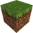
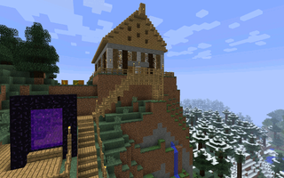
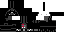
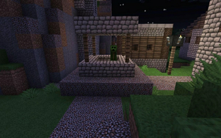
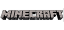

Minecraft
Dieser Artikel wurde für die folgenden Ubuntu-Versionen getestet:
Ubuntu 14.04 Trusty Tahr
Zum Verständnis dieses Artikels sind folgende Seiten hilfreich:
Verwenden eines PPAs, optional
Eine Programmstarter erstellen, optional
Einen Editor öffnen, optional
Installation von Programmen, optional
Wine installieren und benutzen, optional

Minecraft  ist ein kommerzielles Open-World-Spiel von Microsoft, welches sich großer Beliebtheit erfreut. Neben der kostenpflichtigen Variante gab es eine kostenlose Classic-Variante, die sich im Browser spielen ließ. Diese ist seit Ende 2015 nicht mehr verfügbar.
ist ein kommerzielles Open-World-Spiel von Microsoft, welches sich großer Beliebtheit erfreut. Neben der kostenpflichtigen Variante gab es eine kostenlose Classic-Variante, die sich im Browser spielen ließ. Diese ist seit Ende 2015 nicht mehr verfügbar.
Das Registrieren eines Benutzerkontos mit E-Mail-Adresse sowie selbstgewähltem Passwort ist Pflicht und erfolgt im Rahmen der Installation. Nur dann steht ein auf ca. 100 Minuten Spielzeit begrenzter Demo-Modus zur Verfügung. Wer danach weiterspielen möchte, muss das Spiel erwerben.
Freie, aber eingeschränkte Alternativen zu Minecraft findet man in den Spielen Minetest und Voxelands.
Voraussetzungen¶
Zwingende Bedingung für das Spielen von Minecraft ist eine bereits installierte Java Laufzeitumgebung (JRE). Für Ubuntu wird OpenJDK in Version 7 oder neuer empfohlen.
Installation¶
Im Folgenden wird die Installation der Java-Version beschrieben. Die Installation ist entweder manuell oder über ein "Personal Packages Archiv" (PPA) [1] möglich.
Manuell¶
Die Datei minecraft.jar von der Projektseite herunterladen  und in einen beliebigen Ordner, z.B. ~/Spiele/minecraft/ im Homeverzeichnis, speichern. Je nach Desktop-Umgebung muss die Datei noch ausführbar gemacht werden [2]:
und in einen beliebigen Ordner, z.B. ~/Spiele/minecraft/ im Homeverzeichnis, speichern. Je nach Desktop-Umgebung muss die Datei noch ausführbar gemacht werden [2]:
chmod a+x ~/Spiele/minecraft/minecraft.jar
Das Spiel kann dann durch den folgenden Befehl im Terminal gestartet werden:
java -jar ~/Spiele/minecraft/minecraft.jar
Um Minecraft ohne Terminal zu starten, kann man optional sich einen Programmstarter [3] mit einem Editor [4] anlegen. Beispiel (BENUTZERNAME und Pfad müssen noch angepasst werden):
[Desktop Entry] Type=Application Name=Minecraft Name[de]=Minecraft Exec=java -jar /home/BENUTZERNAME/Spiele/minecraft/minecraft.jar Icon=/home/BENUTZERNAME/Spiele/minecraft/minecraft_icon.png Terminal=false StartupNotify=false Categories=Game;
Um den Programmstarter im Menü sichtbar zu machen, speichert man ihn unter /home/BENUTZERNAME/.local/share/applications/minecraft.desktop ab. Damit ein Symbol neben dem Menüeintrag erscheint, muss noch ein passendes Bild unter /home/BENUTZERNAME/Spiele/minecraft/minecraft_icon.png abgelegt werden.
PPA¶
Die Nutzung eines PPAs hat den Vorteil, dass Minecraft über die Paketverwaltung installiert werden kann.
Adresszeile zum Hinzufügen des PPAs:
ppa:minecraft-installer-peeps/minecraft-installer
Hinweis!
Zusätzliche Fremdquellen können das System gefährden.
Ein PPA unterstützt nicht zwangsläufig alle Ubuntu-Versionen. Weitere Informationen sind der  PPA-Beschreibung des Eigentümers/Teams minecraft-installer-peeps zu entnehmen.
PPA-Beschreibung des Eigentümers/Teams minecraft-installer-peeps zu entnehmen.
Damit Pakete aus dem PPA genutzt werden können, müssen die Paketquellen neu eingelesen werden.
Nach dem Aktualisieren der Paketquellen kann das folgende Paket installiert werden [5]:
minecraft-installer (ppa)
 mit apturl
mit apturl
Paketliste zum Kopieren:
sudo apt-get install minecraft-installer
sudo aptitude install minecraft-installer
Spielmodi¶
|  |
| Spieleszene |
Es gibt neben normalem Grünland viele sogenannte „Biome“ wie z.B. Wüsten, Sümpfe und Schneelandschaften. Die kostenpflichtige Vollversion wird durch Updates regelmäßig erweitert.
Überlebensmodus¶
Der Überlebensmodus ist der Standardmodus in Minecraft. Der Spieler muss Rohstoffe abbauen und daraus Werkzeuge herstellen ("craften"). Des Weiteren muss man essen, um nicht zu verhungern, und sich nachts gegen Monster verteidigen oder sich einen Unterschlupf bauen.
Kreativmodus¶
Der Spieler kann seiner Kreativität freien Lauf lassen. Alle Blöcke stehen unbegrenzt zur Verfügung und man kann in der Welt herumfliegen. Man bekommt keinen Schaden oder Hunger und NPCs (vom Spiel erzeugte Kreaturen) greifen nicht an.
Abenteuermodus¶
Der Spieler kann weder Blöcke abbauen noch platzieren. Das Interagieren – z.B. mit Schaltern – oder das Handeln mit Dorfbewohnern sind weiterhin möglich. Dieser Modus bietet also die Möglichkeit, in einer vorher konstruierten Welt gewisse Aufgaben zu bewältigen.
Hardcore-Modus¶
In diesem Modus ist permanent der Schwierigkeitsgrad "Schwierig" eingestellt und ein Umstellen ist nicht möglich. Ansonsten ist das Spielprinzip mit dem Survival-Mode identisch. Stirbt der Spieler im Hardcore-Mode, wird die gesamte Map gelöscht und man muss sich eine neue erstellen.
Zuschauermodus¶
Der Zuschauermodus ähnelt dem Kreativmodus, ist aber kein dauerhafter Spielmodus, denn in diesem Modus kann man nicht in das Spielgeschehen eingreifen, sondern nur zuschauen. Dieser Modus ist ideal, um Welten von anderen Spielern zu betrachten, da man zum Einen auch durch Wände und den Böden fliegen kann und zum Anderen auch die Sicht von anderen Spielern, aber auch von Monstern übernehmen kann.
Weitere Modi¶
Der Spielmodus "Zerklüftet" wurde mit der Version 1.8 eingeführt und besitzt große Berge, die durch zahlreiche Spalten und Täler gegliedert sind.
Spielstand¶
Bei Minecraft wird der Spielstand kontinuierlich gespeichert und ein Zwischenspeichern ist nicht möglich. Um den aktuellen Spielstand manuell zu speichern, den zum Spielstand gehörigen Ordner ~/.minecraft/saves komplett sichern. Zur Wiederherstellung des Spielstands diesen wieder zurückkopieren. Durch eine Synchronisation des Verzeichnisses mittels eines Cloud-Dienstes ist rechner- und plattformunabhängiges Spielen einer Minecraft-Karte auch ohne Server möglich.
Anpassungen¶
|  |
| Skin |
Es gibt viele Möglichkeiten, das Spiel optisch an die eigenen Bedürfnisse anzupassen, z.B. durch Skins (Charakter). Links und Anleitungen hierzu sind im Minecraftwiki  zu finden.
zu finden.
Resource-Packs¶
|  |
| Texture Pack „Ovo's Rustic Redemption 2.0“ |
Die Standard-Texturen der Blöcke, Items, Töne und Nicht-Spieler-Figuren können geändert werden, indem ein „Resource-Pack“ installiert wird.
Wenn ein Resource-Pack gefunden ist, wird es unausgepackt in den Ordner ~/.minecraft/resourcepacks/ kopiert. (Der Ordner kann auch im Spiel unter "Resource Packs -> Open resource pack folder" aufgerufen werden.) Jetzt muss nur noch das Resource-Pack im selben Menü ausgewählt werden.
Mods¶
Inzwischen gibt es zahlreiche Mods zu Minecraft. Wie man diese installieren kann, wird im Artikel Minecraft Forge beschrieben. Als nützliches Werkzeug hilft der Minecraft Modinstaller bei der Installation von Mods.
Problembehebung¶
Soundprobleme¶
Es kann vorkommen, dass das Spiel wegen Soundproblemen mit PulseAudio abstürzt. Teilweise setzt der Sound bereits im Vorfeld des Absturzes aus. Dieses Problem kann umgangen werden, wenn Minecraft mit folgendem Befehl gestartet wird:
padsp java -jar Minecraft.jar
Mehr Speicher für Java¶
Außerdem kann man Java und damit Minecraft beim Start mehr Speicher zuweisen. Ab Minecraft Version 1.6 wird empfohlen, dies innerhalb des Profileditors im Minecraft-Launcher statt auf der Kommandozeile umzusetzen.
1 | java -Xmx1024M -Xms512M -cp minecraft.jar net.minecraft.LauncherFrame |
Dies weist Java einen initialen Heap von 512 MiB und einen maximalen Heap von 1024 MiB (1 GiB) zu.
Achtung!
Ein zu großer Heap kann kontraproduktiv sein, da dann die entsprechend umfangreichere Garbage_Collection im Gegenzug Geschwindigkeitseinbußen oder Lags erzeugen kann. In der Regel sollte 1 GiB vollkommen ausreichend sein. Außerdem steht der von Java reservierte Speicher dem restlichen System nicht zur Verfügung. Man sollte immer genug Speicher für das System übrig lassen.
ATI-Grafikkarte¶
Bei Verwendung des proprietären fglrx-Treibers kann es vorkommen, dass Minecraft plötzlich abbricht. Startet man Minecraft im Terminal, so erscheint dort folgende Fehlermeldung:
A fatal error has been detected by the Java Runtime Environment: SIGSEGV (0xb) at pc=0x..., pid=..., tid=... JRE version: 6.0_26-b03 Java VM: Java HotSpot(TM) Server VM (20.1-b02 mixed mode linux-x86 ) Problematic frame: C [+0x422] __kernel_vsyscall+0x2 If you would like to submit a bug report, please visit: http://java.sun.com/webapps/bugreport/crash.jsp
Es gibt verschiedene Lösungswege:
fglrx¶
Es wird berichtet, dass der beschriebene Fehler bei Verwendung des aktuellen fglrx (11-11 oder neuer) nicht mehr auftritt. Die Installation wird im Artikel Grafikkarten/AMD/fglrx beschrieben. Unter Umständen muss der Treiber manuell installiert werden.
radeon¶
Der Open-Source-Treiber kennt dieses Problem nicht. Die Installation wird im Artikel Grafikkarten/AMD/radeon beschrieben. Leider genügt oft die Leistung des Treibers den hohen Ansprüchen Minecrafts nicht.
libjsig¶
Zunächst muss der Pfad zur Bibliothek libjsig.so ermittelt werden. Diese ist Teil der Java-Laufzeitumgebung (JRE) und normalerweise unter /usr/lib/jvm/ zu finden. Mit dem Befehl [1]:
update-alternatives --display java
wird die Position des aktuell verwendeten Java-Binarys bestimmt. Die libjsig sucht man relativ dazu unter ../lib.
Nun Minecraft im Installationsverzeichnis mit folgendem Befehl starten:
LD_PRELOAD=/PFAD/ZUR/libjsig.so java -jar minecraft.jar
Experten-Info:
Verursacht wird der Fehler dadurch, dass Signale, die für die JVM bestimmt sind, vom fglrx-Treiber abgefangen werden. Mit LD_PRELOAD=... wird die libjsig geladen, welche sich in das Signal-Handling einklinkt und dafür sorgt, dass alle Signale bei der JVM ankommen.
Nvidia-Grafikkarte¶
Bei Nvidia-Karten hat man häufig mit diesem Fehler zu kämpfen:
"java.lang.IllegalStateException: Only one LWJGL context may be instantiated at any one time."
Hier ist es andersherum als beim ATI-Grafikkartentreiber - Minecraft läuft nur mit der proprietären Variante, nicht aber mit dem Open-Source-Treiber. Das heißt, in "Systemeinstellungen -> Zusätzliche Treiber" muss der Treiber aktiviert werden, welcher mit „Empfohlen“ gekennzeichnet ist. Nach einem Neustart startet Minecraft auch wieder.
Wine¶
Achtung!
Man sollte Minecraft in Kombination mit Wine nur im Notfall benutzen, weil es mit der Windows-Version von Java in Wine zu Problemen und Geschwindigkeitseinbußen kommen kann.
Wine installieren [6] und in den Konfigurationen das Betriebssystem auf Windows 7 setzen. Der Rest sollte unverändert bleiben. Anschließend die Offline-Java-Version für Windows herunterladen. Diese macht man ausführbar und installiert sie mit Wine. Die Java-Version von Minecraft mit dem in Wine installierten Java starten.
Minecraft auf zweitem XServer starten¶
Es kann vorkommen, dass Minecraft auf einigen Systemen mit dem Prozess X bzw. dem Xserver in Konflikt gerät, und die Framerate massiv absinkt (<1 fps). Dieses Problem kann man umgehen, indem man Minecraft auf einem separaten XServer über eine virtuelle Konsole startet.
Dazu wie folgt vorgehen:
Zuerst benötigt man ein einfaches Skript, welches die minecraft.jar mit den dazugehörigen Parametern startet:
In diesem Bsp. die Datei minestart.sh im Verzeichnis ~/Spiele/Minecraft/ (wo in diesem Beispiel auch die minecraft.jar liegt):1 2
#!/bin/bash java -Xmx1024M -Xms512M -jar ~/Spiele/Minecraft/minecraft.jarUm den nun folgenden Befehl bequem ausführen zu können, ein weiteres Skript (z.B. xmc) mit Rootrechten in /usr/local/bin/ mit diesem Inhalt erstellen:
1 2
#!/bin/bash xinit /usr/bin/ck-launch-session ~/Spiele/Minecraft/minestart.sh -- :1Nun kann man sich auf der virtuellen Konsole anmelden und mit dem Befehl xmc Minecraft starten.
Mit F11 kann Minecraft nun noch auf volle Größe gebracht werden.
Probleme mit der Tastatur¶
Neo2-Layout¶
Bei der Benutzung des Tastatur-Layouts Neo2 kommt es zum Hängen der Umschalttaste ( ⇧ ). Wurde diese betätigt, so kann mittels Esc das Hauptmenü aufgerufen und auf den Fensterrahmen geklickt werden. Dieser Vorgang ist nach jeder Benutzung der Umschalttaste zu wiederholen.
Eine weiterer Workaround ist es, das Tastatur-Layout auf ein anderes umzuschalten (z.B. Standard QWERTZ). Anschließend kann die Umschalttaste betätigt werden, ohne dass es zum Hängen kommt.
Tastenkürzel¶
Eine Auswahl an Tastenkürzeln - diese kann man im Menü Esc unter "Options... -> Controls..." frei definieren.
| Tastenkürzel | |
| Taste(n) | Funktion |
| W + A + S + D | Steuerung des Charakters |
| Springen | |
| ⇧ | Ducken |
| E | Inventar öffnen |
| Q | Gegenstand wegwerfen |
1 -
9 +  (Mausrad) (Mausrad) | Gegenstände auswählen |
 | Block/Gegenstand abbauen |
 | Setzen, ablegen und aufrufen |
| Esc | Menü |
| T | Chat |
| F1 | Ansicht für Bildschirmfoto (Das HUD wird ausgeblendet) |
| F2 | Bildschirmfotos aufnehmen. Diese werden im Homeverzeichnis unter .minecraft/screenshots gespeichert. |
| F3 bzw. ⇧ + F3 | Zusätzliche Informationen anzeigen |
| F5 | Ansicht 3rd-Person |
| F11 | Vollbild |
| F8 | Weiche Mausbewegung für Kamerafahrten |
Infobox¶
| Minecraft | |
| Originaltitel: | Minecraft |
| Genre: | Open-World-Spiel / Adventure |
| Sprache: | multilingual |
| Veröffentlichung: | 10. Mai 2009 |
| Publisher: | Mojang AB |
| Systemvoraussetzungen: | Aktuelles Java, für best. Grafikeinstellungen 64-Bit-Java |
| Medien: | Download |
| Strichcode / EAN / GTIN: | - |
| Läuft mit: | Java |

Links¶
Minecraft - Pocket Edition
- für AndroidMinecraft - Pi Edition
- für den Raspberry Pi
Minecraft-Wiki
- auf DeutschMinecraft-auf-Linux.de
- Howtos, Tutorials, etc.Minecraftopia
- Howtos, Items, etc.

- Erstellt mit Inyoka
-
 2004 – 2017 ubuntuusers.de • Einige Rechte vorbehalten
2004 – 2017 ubuntuusers.de • Einige Rechte vorbehalten
Lizenz • Kontakt • Datenschutz • Impressum • Serverstatus -
Serverhousing gespendet von